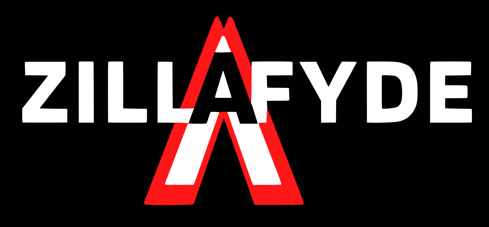
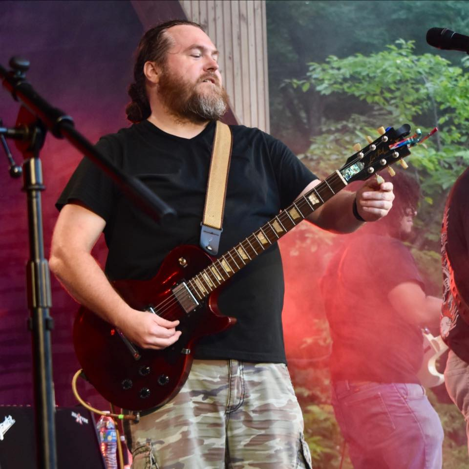
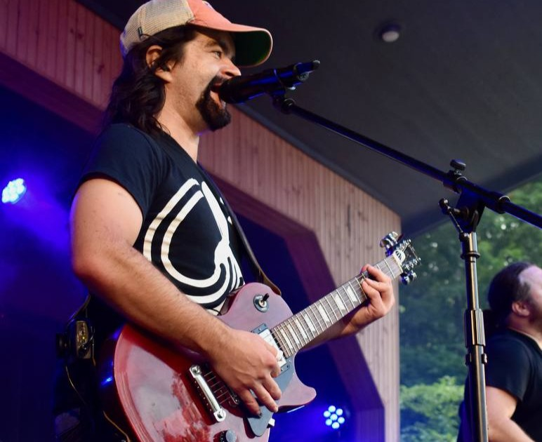
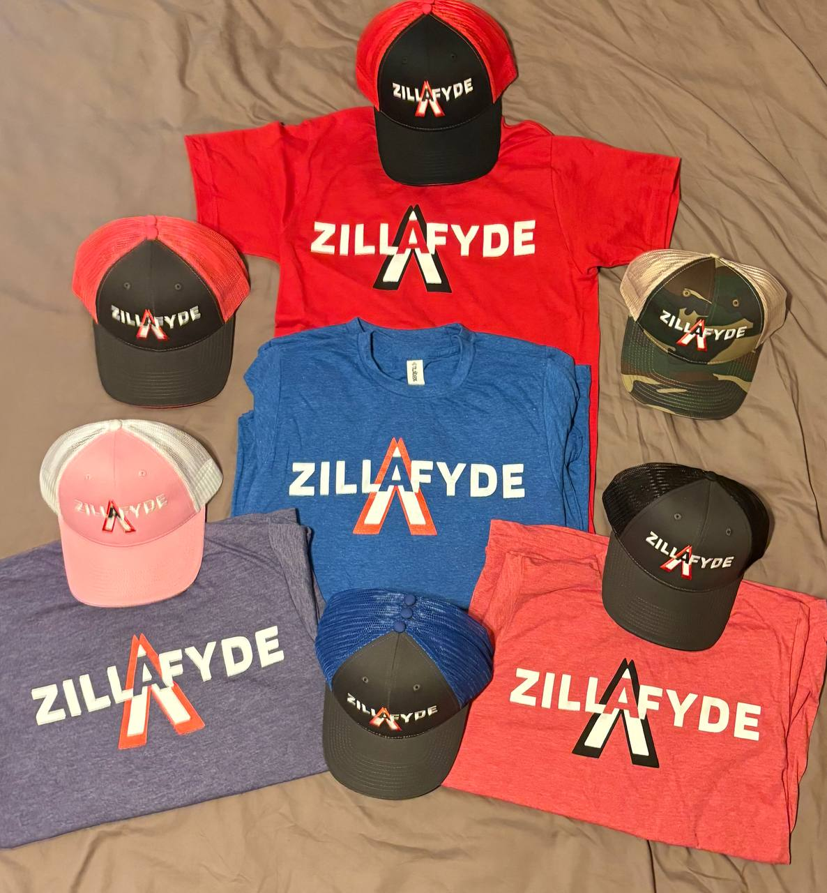
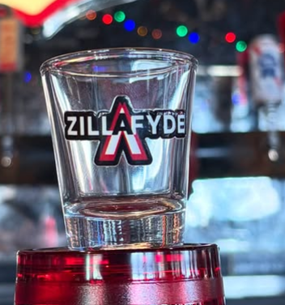

Groove-Rock from Bloomington, IN
A Groove-Rock Band with an Extensive Catalog of Originals and Covers
Listen
Tour
About the band
Biography
Formed in late summer 2022, Zillafyde delivers a dynamic blend of original compositions and select cover songs, creating an eclectic mix that captivates audiences. Drawing inspiration from classic artists like Led Zeppelin and Jimi Hendrix, as well as contemporary acts such as The Revivalists, Umphrey’s McGee, Jack White, and Local H, their performances are known for their ever-changing vibe and engaging energy.
The Band

Scott See
Frontman, Co-founder & Guitarist — Charismatic people-magnet and the face of the band; Scott doesn’t know a stranger and turns every crowd into friends. Primary songwriter who yells into the mic with heart, leads the stage with swagger, and co-founded the whole operation with Silver—part showman, part storyteller.

Silver Coulter
Backup Vocalist, Co-founder, Lead Guitarist, & Producer — Guitar wizard with two decades of mileage and a producer’s ear; he doesn’t just shred, he sculpts the sound. Influences run from Led Zeppelin to Tool to Brad Paisley, which explains why his solos can be both feral and tasteful. Handles lead fills and harmonies, tweaks tone in the studio until you cry, and secretly checks the setlist three times before every show. Less frontman fury than Scott, more studio-surgeon precision — brings both the guitar fireworks and the glue that makes the songs actually work.
Patrick Petro
Drums — Started pounding skins in 1985 and hasn’t stopped. Veteran of marching bands, jazz combos, musicals, jam bands, and more—Pat’s the human metronome who sneaks in wild fills when you’re not looking. Think groove maestro meets controlled chaos: keeps the pocket tight, the solos surprising, and the rest of us wondering how he did that.
Al Kelley
Bass — Grew up in Brown County, heard Primus at 16, and decided the world needed more low end. Former slap enthusiast turned song-first anchor, Al’s grooves are equal parts pocket and personality. He locks the band down so Scott can scream and Silver can solo—quiet until the bass drops, then absolutely unforgivable.
Zillafyde Merch
Available at all shows! Check the Tour Calendar for details.


Bookings
Interested in booking ZILLAFYDE? We show up on time. Get in touch!